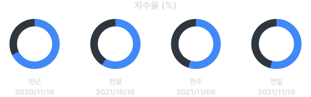
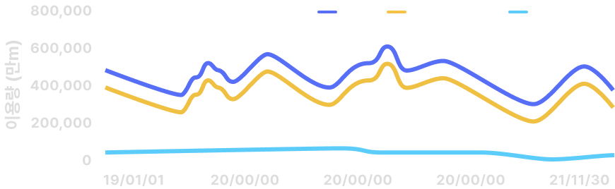
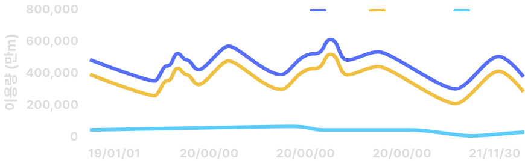
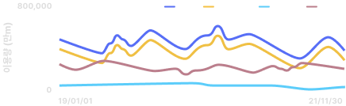
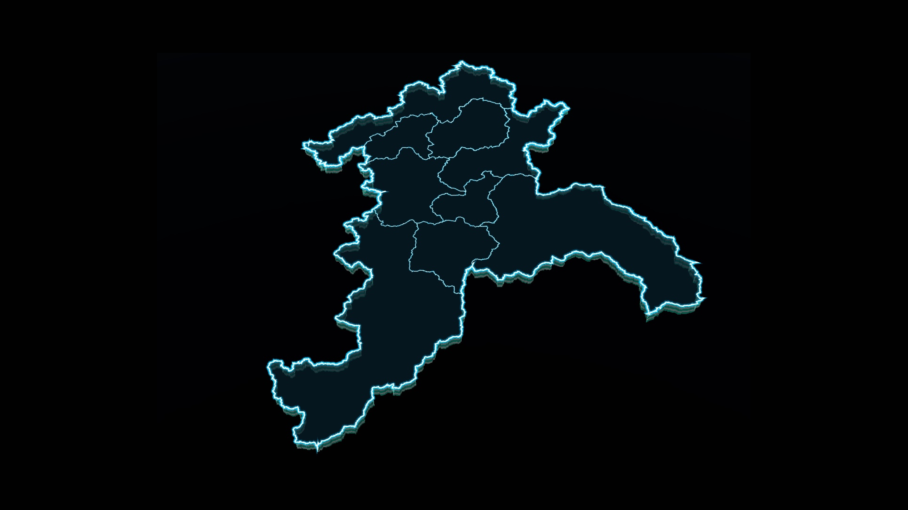

Digital GARAM
가뭄
가뭄닫기
-
기간 조회
- 8월 15일 (토) 3:14PM
- 최고 31° / 최저 26°
댐저수지 저수 현황
시군구-남원시
|
2022-07-06
총저수용량 (만m)
1,122.6
저수율 (%)
78.5
(83.4%)
저수량 (만m)
881.1
(16.6%)
합계
댐
농업용 저수지

유역 내외 공급
총저수용량 (만m)
1,122.6
저수율 (%)
78.5
(83.4%)
저수량 (만m)
881.1
(16.6%)

유역 내외 공급
총저수용량 (만m)
1,122.6
저수율 (%)
78.5
(83.4%)
저수량 (만m)
881.1
(16.6%)

유역 내외 공급
총저수용량 (만m)
1,122.6
저수율 (%)
78.5
(83.4%)
저수량 (만m)
881.1
(16.6%)

수자원시설 저수현황
저수율
(%)
- 0-19
- 20-39
- 40-59
- 60-79
- 80-100
- 다목적댐
- 발전댐
- 농업용댐
- 용수댐
 하수처리장
하수처리장- 취수장
- 전북 순창군 동계면 어치리 35’9.89’ - 6.7463”N -82’30.00’0.0000E 26889486.19m elev
